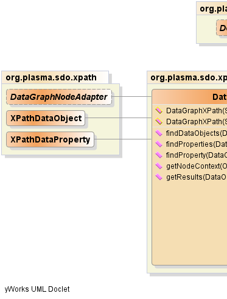
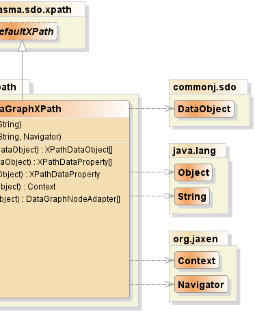

public class DataGraphXPath extends DefaultXPath
data graph based on Jaxen.
This is the main entry point for matching an XPath against
a data graph.
|  |  |
| Constructor and Description |
|---|
DataGraphXPath(java.lang.String xpathExpr) |
DataGraphXPath(java.lang.String xpathExpr,
org.jaxen.Navigator navigator) |
| Modifier and Type | Method and Description |
|---|---|
XPathDataObject[] |
findDataObjects(commonj.sdo.DataObject root)
Returns an array of Data Object results, an error being thrown if
other than Data Object results are found or if
multiple results are found but the target Property is not a
"many" Property, i.e. a multi-valued property.
|
XPathDataProperty[] |
findProperties(commonj.sdo.DataObject root)
Returns an array of Property results, an error being thrown if
other than Property results are found.
|
XPathDataProperty |
findProperty(commonj.sdo.DataObject root)
Returns a single Property result or null
if no Property results are found.
|
org.jaxen.Context |
getNodeContext(java.lang.Object node) |
DataGraphNodeAdapter[] |
getResults(commonj.sdo.DataObject root)
Returns an array with either 1 single result or multiple results,
and error being thrown if no results are found or if
multiple results are found but the target Property is not a
"many" Property, i.e. a multi-valued Property.
|
isXPathaddNamespace, booleanValueOf, createFunctionContext, createNamespaceContext, createVariableContext, debug, evaluate, getContext, getContextSupport, getFunctionContext, getNamespaceContext, getNavigator, getRootExpr, getVariableContext, numberValueOf, selectNodes, selectNodesForContext, selectSingleNode, selectSingleNodeForContext, setFunctionContext, setNamespaceContext, setVariableContext, stringValueOf, toString, valueOfpublic DataGraphXPath(java.lang.String xpathExpr)
throws org.jaxen.JaxenException
org.jaxen.JaxenExceptionpublic DataGraphXPath(java.lang.String xpathExpr,
org.jaxen.Navigator navigator)
throws org.jaxen.JaxenException
org.jaxen.JaxenExceptionpublic org.jaxen.Context getNodeContext(java.lang.Object node)
public DataGraphNodeAdapter[] getResults(commonj.sdo.DataObject root) throws org.jaxen.JaxenException, InvalidMultiplicityException
IllegalXPathArgumentException - if no results are found or if
multiple results are found but the target Property is not a
"many" property, i.e. a multi-valued Property. The target Property
is the result or end point Property after resolving an XPATH.org.jaxen.JaxenException - as required by the Jaxen APIInvalidMultiplicityException - if the given XPATH resulted in
multiple values for a singular propertypublic XPathDataProperty[] findProperties(commonj.sdo.DataObject root) throws org.jaxen.JaxenException, InvalidEndpointException
org.jaxen.JaxenException - as required by the Jaxen APIInvalidEndpointException - when the result or
terminating node or nodes are not Property nodespublic XPathDataProperty findProperty(commonj.sdo.DataObject root) throws org.jaxen.JaxenException, InvalidEndpointException
org.jaxen.JaxenException - as required by the Jaxen APIInvalidEndpointException - when the result or
terminating node or nodes are not Property nodespublic XPathDataObject[] findDataObjects(commonj.sdo.DataObject root) throws org.jaxen.JaxenException, InvalidEndpointException, InvalidMultiplicityException
IllegalXPathArgumentException - if
other than Data Object results are found or if
multiple results are found but the target Property is not a
"many" Property, i.e. a multi-valued Property. The target Property
is the result or end point Property after resolving an XPATH.org.jaxen.JaxenException - as required by the Jaxen APIInvalidEndpointException - when the result or terminating node or nodes
for an XPATH expression are not Data Object nodesInvalidMultiplicityException - when multiple results are detected for a
singular propertyPlasmaSDO™ and PlasmaQuery™ are trademarks of TerraMeta Software, Inc. Copyright © 2011 - All Rights Reserved.